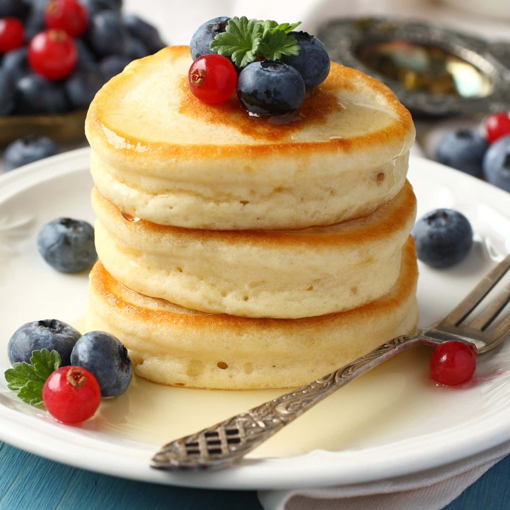
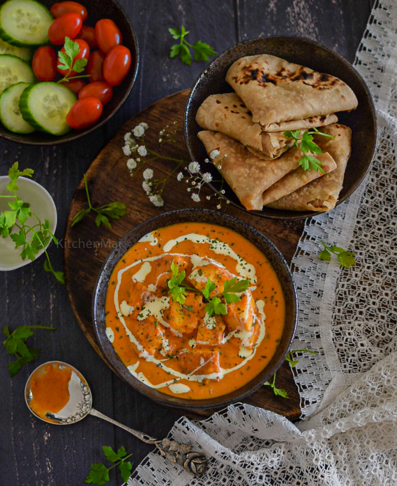

Welcome, my friend!
I'm so glad you've come to my digital kitchen. This collection is a simple labor of love, a place to share the recipes that have brought me so much joy. I'm no professional chef, just a humble home cook, but I hope these recipes inspire you to create something delicious.
Contents
Recipes
Classic Pancakes Simple Spaghetti Aglio e Olio Quick and Easy Tuna Salad Butter Chicken Grilled Chicken Chicken Tikka Masala Paneer Butter Masala Fish Finger Egg Fried Rice Veg Fried Rice Mixed Fried Rice Egg Roll Chicken Roll Egg Chicken RollProtein Intake
10g
12g
25g
30g
45g
35g
20g
15g
8g
6g
10g
12g
20g
25g
Classic Pancakes
Ingredients
- 1 ½ cups all-purpose flour
- 3 ½ teaspoons baking powder
- 1 tablespoon white sugar
- ¼ teaspoon salt
- 1 ¼ cups milk
- 1 egg
- 3 tablespoons butter, melted
Instructions
- In a large bowl, sift together the flour, baking powder, sugar, and salt.
- In a separate bowl, whisk together the milk, egg, and melted butter.
- Pour the wet ingredients into the dry ingredients and mix until just combined. Do not overmix.
- Heat a lightly oiled griddle or frying pan over medium-high heat. Pour about ¼ cup of batter for each pancake.
- Cook until bubbles appear on the surface of the pancake, then flip and cook until browned on the other side.
- Serve the pancakes with blueberries, cherries and honey or as you may prefer.
Simple Spaghetti Aglio e Olio

Ingredients
- 8 ounces spaghetti
- ½ cup olive oil
- 4-6 cloves garlic, thinly sliced
- ¼ teaspoon red pepper flakes (or to taste)
- ¼ cup fresh parsley, chopped
- Salt and pepper to taste
Instructions
- Cook spaghetti according to package directions until al dente. Reserve ½ cup of pasta water before draining.
- While the pasta cooks, heat olive oil in a large skillet over low heat. Add garlic and red pepper flakes. Sauté until garlic is fragrant, about 2 minutes. Do not let the garlic brown.
- Add drained pasta to the skillet. Toss to coat with the oil mixture.
- Stir in the reserved pasta water and chopped parsley. Toss until a light sauce forms. Season with salt and pepper.
- Serve immediately, garnished with extra parsley if desired.
Quick and Easy Tuna Salad
Ingredients
- 1 (5 ounce) can tuna, drained
- 2 tablespoons mayonnaise
- 1 celery stalk, finely chopped
- 1 tablespoon sweet pickle relish (optional)
- Salt and black pepper to taste
Instructions
- In a medium bowl, combine the drained tuna, mayonnaise, chopped celery, and relish (if using).
- Mix well until all ingredients are combined.
- Season with salt and pepper to taste.
- Serve with bread, crackers, or with a salad.
Butter Chicken
Ingredients
- 500g chicken breast, cubed
- 1 cup plain yogurt
- 2 tbsp butter
- 1 onion, finely chopped
- 2 cloves garlic, minced
- 1 can crushed tomatoes
- ½ cup heavy cream
- Spices: garam masala, turmeric, cumin, coriander
Instructions
- Marinate chicken in yogurt and spices for at least 30 minutes.
- Melt butter in a pan and sauté onion and garlic until soft.
- Add tomatoes and cook until the sauce thickens.
- Add marinated chicken and cook until no longer pink.
- Stir in heavy cream and simmer for 10-15 minutes. Serve hot with rice or naan.
Grilled Chicken

Ingredients
- 4 boneless, skinless chicken breasts
- 2 tbsp olive oil
- 1 tsp smoked paprika
- 1 tsp garlic powder
- ½ tsp salt
- ¼ tsp black pepper
Instructions
- In a small bowl, combine paprika, garlic powder, salt, and pepper.
- Rub chicken breasts with olive oil, then sprinkle with the spice mixture.
- Preheat grill to medium-high heat.
- Grill chicken for 6-8 minutes per side, or until cooked through.
- Serve on a plate, sprinkle some chopped coriander and garnish with lemons
Chicken Tikka Masala

Ingredients
- 500g chicken thighs, cubed
- 1 cup plain yogurt
- 1 onion, diced
- 1 can tomato puree
- ½ cup heavy cream
- Spices: cumin, coriander, turmeric, paprika, ginger-garlic paste
Instructions
- Marinate chicken in yogurt and spices for at least 2 hours.
- Grill or pan-fry chicken until browned and cooked through.
- Sauté onion, then add tomato puree and spices to make the sauce.
- Add the cooked chicken and heavy cream to the sauce and simmer for 15 minutes.
- Serve with rice or naan
Paneer Butter Masala
Ingredients
- 250g paneer, cubed
- 2 tbsp butter
- 1 onion, finely chopped
- 1 can tomato puree
- ½ cup heavy cream
- Spices: garam masala, turmeric, salt, sugar
Instructions
- Sauté onion in butter until soft. Add tomato puree and spices, cooking until sauce thickens.
- Add paneer cubes and simmer gently.
- Stir in heavy cream and cook for 5 minutes. Serve with rice or roti.
Fish Finger

Ingredients
- 500g fish fillets, cut into strips
- 1 cup breadcrumbs
- 1 egg, beaten
- ½ cup all-purpose flour
- Salt and pepper to taste
- Oil for frying
Instructions
- Season fish strips with salt and pepper.
- Dredge each strip in flour, then dip in beaten egg, and finally coat in breadcrumbs.
- Heat oil in a pan and fry fish fingers until golden brown and crispy.
- Serve hot with tartar sauce or ketchup.
Egg Fried Rice

Ingredients
- 2 cups cooked rice (day-old is best)
- 2 eggs, scrambled
- 1 tbsp soy sauce
- 1 tsp sesame oil
- ½ cup mixed vegetables (peas, carrots)
- 1 green onion, chopped
Instructions
- Heat a wok or large pan with oil. Sauté mixed vegetables until tender.
- Add cooked rice and break it apart. Stir-fry for 2 minutes.
- Pour scrambled eggs into the pan and cook, stirring constantly.
- Stir in soy sauce and sesame oil. Mix well. Garnish with green onion.
Veg Fried Rice
Ingredients
- 2 cups cooked rice (day-old is best)
- 1 tbsp soy sauce
- 1 tsp sesame oil
- 1 cup mixed vegetables (peas, carrots, corn, bell peppers)
- 1 green onion, chopped
Instructions
- Heat a wok or large pan with oil. Sauté mixed vegetables until tender-crisp.
- Add cooked rice and break it apart. Stir-fry for 2 minutes.
- Stir in soy sauce and sesame oil. Mix well. Garnish with green onion.
Mixed Fried Rice

Ingredients
- 2 cups cooked rice (day-old is best)
- 1 cup mixed vegetables
- 1 egg, scrambled
- ½ cup cooked chicken, shrimp
- 1 tbsp soy sauce
- 1 tsp sesame oil
Instructions
- Heat a wok with oil. Cook chicken, shrimp. Remove and set aside.
- Add vegetables and stir-fry until tender-crisp.
- Add rice and cook for 2 minutes. Stir in the scrambled egg and cooked meat.
- Finish with soy sauce, sesame oil, and stir-fry until well combined.
- Serve hot!
Egg Roll

Ingredients
- 2 eggs, beaten
- 1 tbsp oil
- 1 tsp soy sauce
- Salt and pepper to taste
- 1 flour tortilla or thin chapati
- thinly cut cucumbers and onions
- tomato sauce
Instructions
- Heat oil in a pan. Pour beaten eggs, soy sauce, salt, and pepper.
- Cook until the egg is mostly set. Place the tortilla on top.
- Flip the tortilla and egg, cooking for 1 minute.
- Put cucumbers and onions along with the tomato sauce in the center and then roll it up tightly using a paper or foil and serve hot.
Chicken Roll

Ingredients
- 250g cooked chicken strips
- 1 onion, thinly sliced
- 1 tsp ginger-garlic paste
- 1 tbsp soy sauce
- 1 tsp chopped chili, thinly cut onion
- 1 flour tortilla or thin chapati
Instructions
- Sauté onion, ginger-garlic paste, and chili flakes in a pan.
- Add chicken and soy sauce. Cook for 5 minutes.
- Warm the tortilla or chapati, place the chicken mixture,chillies,thinly cut onions in the center, and roll it up tightly using a paper or foil.
Egg Chicken Roll
Ingredients
- 2 eggs, beaten
- 250g cooked chicken, shredded
- 1 onion, thinly sliced
- 1 tbsp oil
- 1 tsp soy sauce
- Salt and pepper to taste
- 1 flour tortilla or thin chapati
Instructions
- Heat oil in a pan. Add chicken and pepper, salt and cook for 2 minutes.
- Remove the chicken mixture and set aside.
- Pour beaten eggs into the same pan. Place the tortilla on top of the cooking egg.
- Flip the tortilla and egg. Add the chicken mixture and onions to the center and roll it up using a paper or foil. Serve hot with salad.